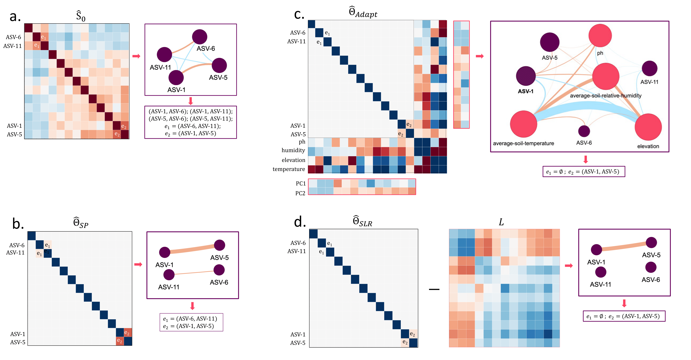

Network Interpretation and Analysis#
Overview#
This chapter explains how to interpret the results from previous chapters and different graphical lasso methods implemented in q2-gglasso. We’ll compare three key approaches: Single Graphical Lasso (SGL), Sparse + Low-Rank (SLR), and Adaptive Graphical Lasso.

Figure 1: Comparison of network structures obtained from different graphical lasso methods on the Atacama Desert microbiome dataset.
Note
Reading taxon labels. Because transform-features now keeps the original
feature identifiers (see --p-keep-original-id), network nodes and heatmap axes
carry the ASV’s real ID, so a selected feature can be traced directly back to its
taxonomy. In the high-dimensional 300-ASV analysis, for
example, the first taxon selected by the log-contrast models is a
Pseudarthrobacter ASV — a genus emblematic of the Atacama soil biota, known for
desiccation- and oligotrophy-tolerant lifestyles, pigment production, and
survival in deep, hyperarid subsurface soils [6, 14, 15].
Key Findings#
Environmental mediation: Some apparent microbial correlations are mediated by environmental factors (elevation, pH, soil humidity, temperature)
Direct interactions: Genuine microbial associations remain significant after controlling for environmental variables
Latent structure: The low-rank component captures systematic variation potentially from unmeasured factors or global environmental gradients
Interpretation guidelines:#
Compare SGL vs. SLR to distinguish direct from latent-mediated associations.
Use adaptive results to identify environment-independent microbial interactions.
Consider edge weights and stability across different λ values for robust associations.
When to Use Each Method#
Method |
Use When |
Key Benefits |
|---|---|---|
SGL |
Exploratory analysis |
Fast, complete network view |
SLR |
Suspected confounders |
Isolates direct associations |
Adaptive model |
Environmental data available |
Uses prior knowledge, controls confounders |
Next Steps#
Once network associations are identified, use q2-classo for regression and classification tasks:
Feature selection: Use identified microbial associations as candidate features for environmental or phenotype prediction
Regression analysis: Model continuous outcomes with sparse microbial predictors
Classification tasks: Predict binary outcome using selected microbial features
Model selection: Validate predictive performance using classo’s built-in model selection methods